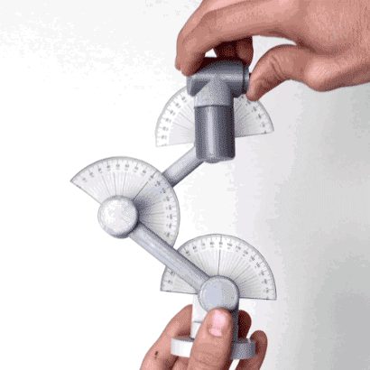
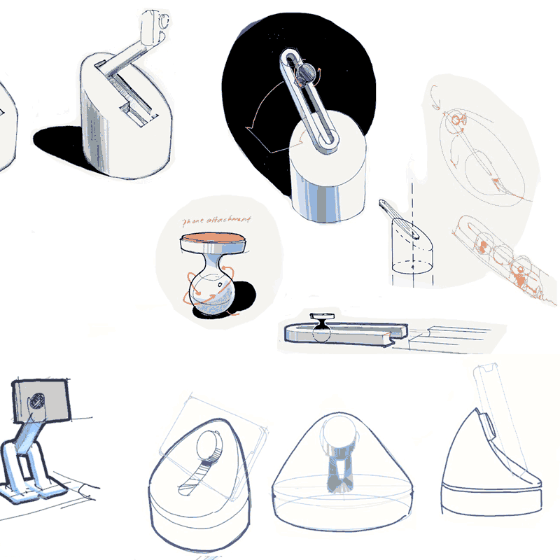
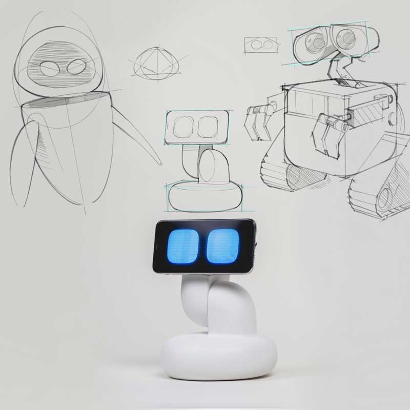
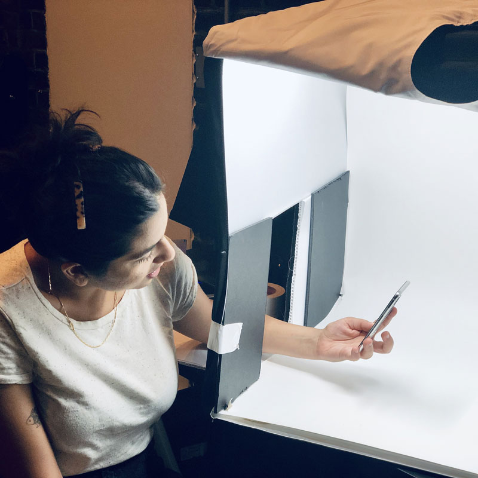
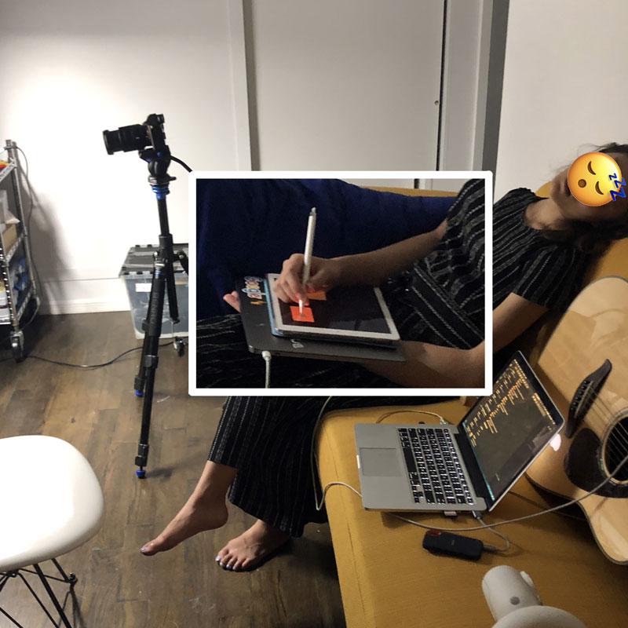

EMOTO CONCEPT
A robotic system to give body and
expression to the AI on your phone

Collaborators
Lucas Ochoa
Gautam Bose
(Advised by Professor Dan Lockton)
Project Space
This was a speculative design fiction reimagining our relationships with our phones as one to an emotive AI. We implemented a mixed hardware and software platform to explore phone functionality as if it were AI driven first and able to take in more varied input (other sensors, not just touch screens) and have more nonconventional output (nonverbal communication through expressive motion). Currently funded by a research grant through Google's Creative Lab. The first live demo debuted at CMU's exhibition "Where are the Humans in AI?" (our answer: 'on their phones').
Emoto's Website
My Role
Concept storyboarder
Prototyper
Mobile/iOT Dev
A few media outlets reposted our initial concept video, and Google's creative lab caught wind of it. They invited us to present, and afterwards donated a 15k grant to our school to fund our work. Our second round in the spring of 2019 focused on building a more robust animation and CV system, exploring more interactions, and making our work public so others can use it for their own prototyping purposes.
1st Round
Human and AI interactions was the last theme from our junior spring semester design studio. This is where we left off with Emoto in the spring of 2018
MY ROLE | Concept artist, and Interaction Protoyper
Tools:
Drawing
Lots of Keynote
Javascript
Shiftr.io
HTML/CSS
Web Sockets
After Effects
Lucas had helped me on a very similar technical project before, and Gautam was my co-author on a different paper so I was very excited to work with them again.
At the time I was fascinated with the social/interaction problems with IPA's, the polarized humanization/abstraction in the form of home assistants, the attention economy and rising efforts to control our addiction to mobile smartphones, and wow I could keep on going — but for this project I pushed it as a provocation towards reframing our relationship to phones, and expanding the nonverbal communication methods + expressiveness of an IPA through animated motion and coordinated hybrid digital-physical interactions.
The original studio project was only a few weeks, so I spent my time story boarding, drawing out forms (eyes and body), and coding the digital interface/iOT backend for Emoto to at least communicate the hybrid digital physical concept of an AI sidekick that comes to life from your phone.
The second time around we shifted the technical roles a bit. Gautam took over developing on device, making a native REACT app for the phone. I worked closely with him to develop the robot's animation system while creating the animated eye assets in Aftereffects.
Abridged Process
(Shortened to my perspective specifically)
Checkout Lucas' documentation or our Medium post for more.

Whiteboard braindumping with Lucas 
Warming up to animating with sensors 
Hide magnet in the Nexus phone = Invisible mounting Fullscreen browser with an accelerometer driven JS animation 
Trying to generate joint angles for animation through a model rigged in Unity - 
Protractors stuck to joints = much easier/faster animation prototyping. Ended up going with a keyframe styled method... 
Making sure WOZ sends to python reciever 
Conner teaches me how to spray paint models properly 
That vinyl title was a pain to put on 
Plant stolen for setting mood in exhibition space. 
Some messy innards. Servo hats for PI's and such. 
Setting up for show above and below 
Show time. Vinyl instructions and handy exhibition labels Live sequence from someone's cellphone at the show
2nd Round Process
Better WOZ control system, more CV options, higher fidelity animations.
Lots of note-taking, brainstorming, and storyboarding on the iPad 
Excerpt from revisiting alternate eye forms before remaking the javascript set at higher visual fidelity in AE. - 
Form sketches varied wildly while we figured out which axis of movement prioritize. Later we snagged Conner Harden to help. - 
Final form language resembles a cross between Eva and Wall-E, as it repeats the squircle shape of apps and rounded corners of the phone Gautam implemented a mirrored control method. We were inspired by prior work of Conner Harden + Cameron Burgess, & Soonho Kwon.- 
Our lovely hand-model-classmate Aisha with our lightbox cut open to accomodate filming needs. - 
For filming we had our WOZ controller + recorder app kept on the iPad for better puppeting with pencil. We made an open source plan for making the robot, and filmed a stop motion to accompany the documentation